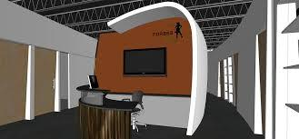
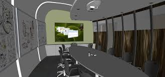
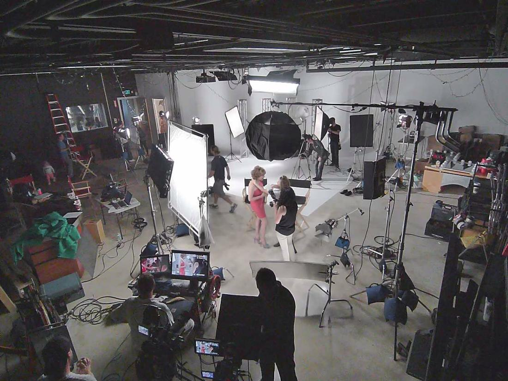
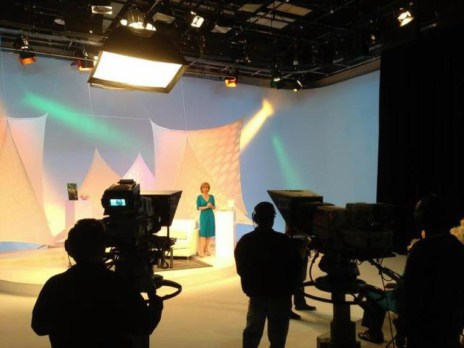
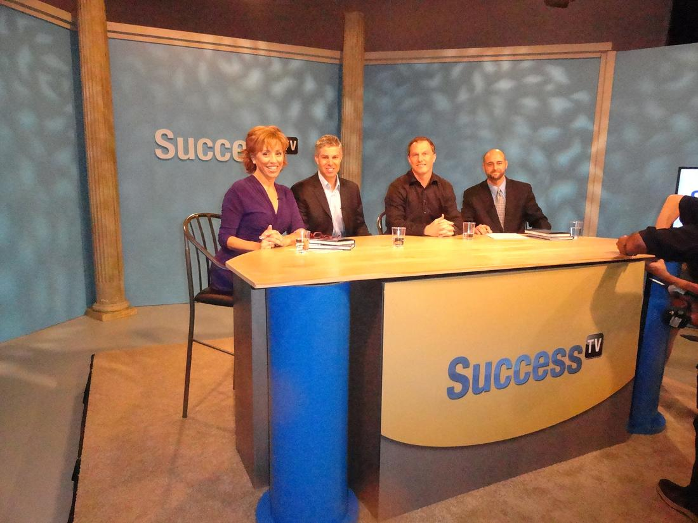
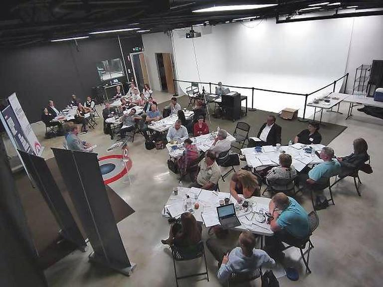
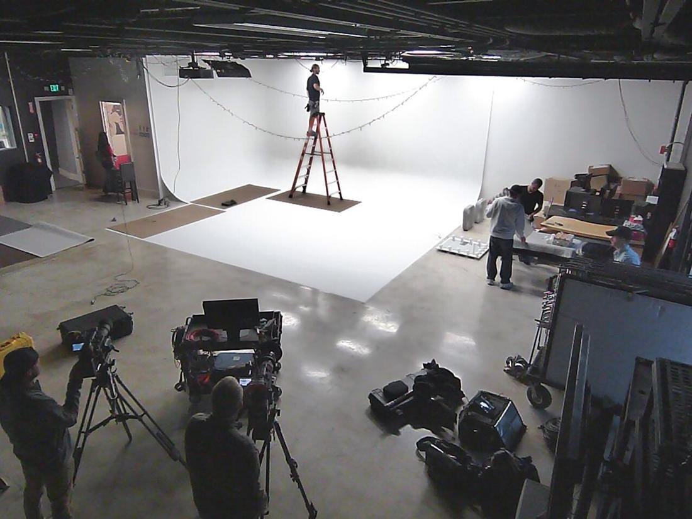
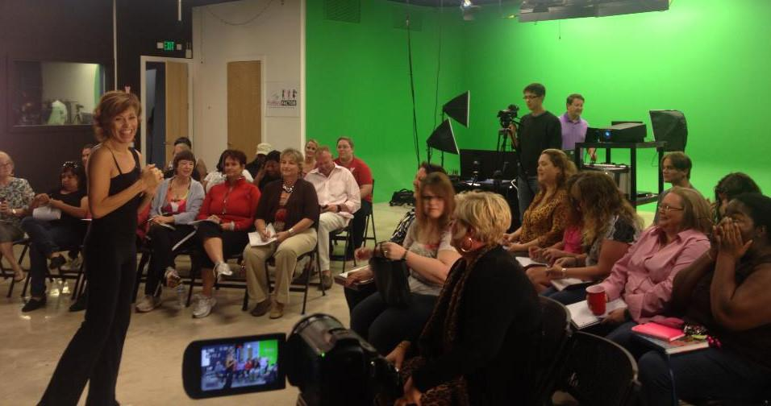
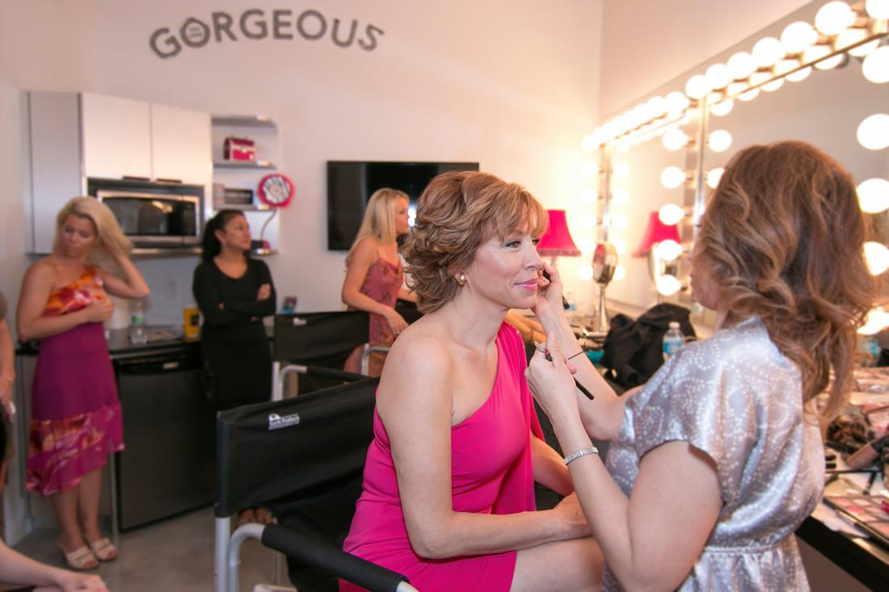

Forbes Riley Production Studios
Its Very exciting OWNING a TV Studio
WELCOME
TO THE STUDIO WHERE IDEAS COME TO LIFE
5000 sq. ft. full-service television, media and production hub, complete with a 2500 sq. ft. sound stage, 450 sq. ft. green screen and conference/event space available for rent.
It started out as a dream… and a drawing!


for more info: call 727 954 7071
ABOUT US
![ABOUT US Our studios are the brain child of Forbes Riley - Broadway, television and film star and 20-year veteran of branded television campaigns, grossing sales totals of more than $2 billion. At the core of her success, Forbes says, “I’m a communicator. I know how to reach people and engage them. It doesn’t matter what media I use—TV, film, stage, radio—it’s about connecting with people.” Forbes isn’t only interested in being in front of the camera, though. Her newest project is Forbes Riley Studios. A 5000 sq. ft. full-service television, media and production hub, complete with a sound stage, 450 sq. ft. green screen and conference/event space available for rent. Forbes Riley Studios is a unique interactive center for television, film and media production also offering state-of-the-art teleconferencing capabilities with an emphasis on high security and privacy for visitors. Clients have traveled from around the world and locally to experience the programming offered at the studio. In the recent past, Forbes facilitated “Forbes Factor” at the studio, a life and business coaching event for 75 successful women who sought Forbes' leadership to help them amplify their success with their professional and personal goals.](postimg/2016/06/e9ca64_0ae24dcbf3e345daa7235967b4a6b661.jpg) Our studios are the brain child of Forbes Riley – Broadway, television and film star and 20-year veteran of branded television campaigns, grossing sales totals of more than
Our studios are the brain child of Forbes Riley – Broadway, television and film star and 20-year veteran of branded television campaigns, grossing sales totals of more than
$2 billion. At the core of her success, Forbes says, “I’m a communicator. I know how to reach people and engage them. It doesn’t matter what media I use—TV, film, stage, radio—it’s about connecting with people.”
Forbes isn’t only interested in being in front of the camera, though. Her newest project is Forbes Riley Studios.

A 5000 sq. ft. full-service television, media and production hub, complete with a sound stage, 450 sq. ft. green screen and conference/event space available for rent.Forbes Riley Studios is a unique interactive center for television, film and media production also offering state-of-the-art teleconferencing capabilities with an emphasis on high security and privacy for visitors.
Clients have traveled from around the world and locally to experience the programming offered at the studio. In the recent past, Forbes facilitated “Forbes Factor” at the studio, a life and business coaching event for 75 successful women who sought Forbes’ leadership to help them amplify their success with their professional and personal goals.


Perfect for Film/TV, photography & classes!




![ABOUT US Our studios are the brain child of Forbes Riley - Broadway, television and film star and 20-year veteran of branded television campaigns, grossing sales totals of more than $2 billion. At the core of her success, Forbes says, “I’m a communicator. I know how to reach people and engage them. It doesn’t matter what media I use—TV, film, stage, radio—it’s about connecting with people.” Forbes isn’t only interested in being in front of the camera, though. Her newest project is Forbes Riley Studios. A 5000 sq. ft. full-service television, media and production hub, complete with a sound stage, 450 sq. ft. green screen and conference/event space available for rent. Forbes Riley Studios is a unique interactive center for television, film and media production also offering state-of-the-art teleconferencing capabilities with an emphasis on high security and privacy for visitors. Clients have traveled from around the world and locally to experience the programming offered at the studio. In the recent past, Forbes facilitated “Forbes Factor” at the studio, a life and business coaching event for 75 successful women who sought Forbes' leadership to help them amplify their success with their professional and personal goals.](postimg/2016/06/e9ca64_356ec2ce8c464aaa8dc011f5c43b1cd6.jpg)